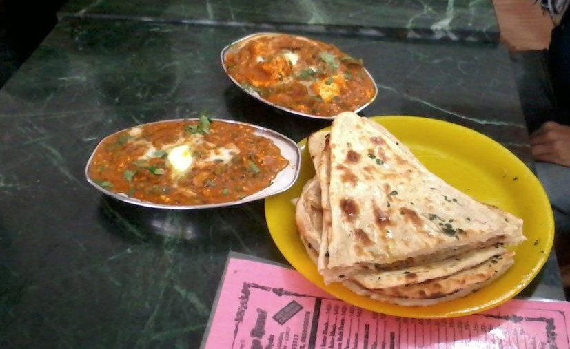

Contains: milk, tree nuts
Ingredients
Quantities for 4.
- 350g, cut into 2cm cubes Paneer
- 20, soaked in hot water 20 minutes Cashew
- 1 tbsp, soaked with the cashews Melon Seedsfor extra bodyoptional
- 2 medium (240g), sliced Onion
- 2 medium (200g), chopped Tomato
- 1.5 inch Ginger
- 4 cloves Garlic
- 1 Green Chilli
- 3 tbsp Ghee
- 4 pods, bruised Cardamom
- 1 inch stick Cinnamon
- 3 Clovesoptional
- 1 Black Cardamomoptional
- 100ml Cream
- 1/2 cup Milk
- 1 tsp Kashmiri Chillicolour only, this gravy stays mild
- 1/4 tsp Garam Masala
- 1 tsp Sugar
- 1/4 tsp Kewra Wateror a few drops of rose wateroptional
- to taste Salt
- 1 cup Water
Cookware
stovetop, kadhai, blender
Checked against the ingredient list for ten allergens: milk, egg, fish, crustaceans, tree nuts, peanuts, sesame, mustard, soy and gluten. Brands vary, so read the label on anything new to you.
Before you start
- Soak the cashews and melon seeds in hot water for 20 minutes so they blend to a completely smooth paste.
- Boil the onions rather than browning them. This gravy is meant to be pale, not brown.
- Have the cream at room temperature; cold cream straight from the fridge is more likely to split in the pan.
Method
- Simmer the sliced onion, ginger, garlic and green chilli in 1 cup water for 10 minutes until completely soft, then cool slightly.Boiling instead of frying keeps the gravy ivory. Browning here gives you a different dish.
- Blend the boiled onion mixture with the drained cashews and melon seeds to a silky paste, adding a little of the cooking water.Blend a full 2 minutes and pass it through a sieve if you want restaurant smoothness.
- Blend the tomato separately to a puree and set aside.
- Heat the ghee in a kadhai and fry the cardamom, cinnamon, cloves and black cardamom for 40 seconds until fragrant.
- Add the tomato puree and cook 8 minutes until it thickens and the ghee separates.
- Stir in the cashew-onion paste and cook 10 minutes on low, stirring constantly.It spits violently and catches easily. Use a lid as a shield and keep the heat low.
- Add the kashmiri chilli, sugar, 1 tsp salt and the milk, and simmer 5 minutes to a gravy that coats a spoon.
- Slide in the paneer cubes and simmer 3 minutes on the lowest heat.
- Turn off the heat, stir in the cream and garam masala, and add the kewra water.Cream goes in off the heat. Boiled cream splits into an oily film.
- Rest 5 minutes covered, then fish out the whole spices and serve with naan or pulao.
Storage
Keeps 2 days refrigerated. Reheat very gently with a splash of milk, never at a boil. Do not freeze. The cream and paneer both suffer.
Nutrition Low estimate
High protein: 20 g a serving, 16% of the calories
| Per serving317 g | Per 100 g | |
|---|---|---|
| Calories | 514 kcal | 163 kcal |
| Protein | 20.0 g | 6 g |
| Carbohydrate | 15.4 g | 5 g |
| of which sugars | 9.4 g | 3 g |
| Fibre | 2.0 g | 1 g |
| Fat | 42.4 g | 13 g |
| of which saturated | 24.0 g | 8 g |
| of which unsaturated | 13.7 g | 4 g |
Ingredients given to taste count as zero, so the real figures run a little higher. Nearest database match used for garam masala. Estimated from raw ingredients using USDA FoodData Central.
More like this: Vegetarian Indian recipes · Gluten-free Indian recipes · Punjabi recipes
Times, yields, allergens and nutrition are guidance. Use your own judgement on doneness and on storing. More in About.